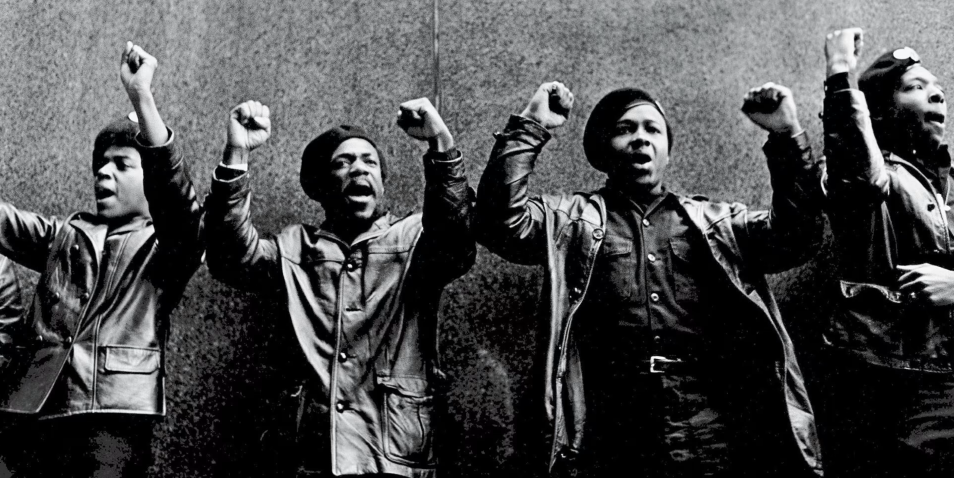

Nossa história em cada fio.
Este espaço traz conteúdos que exploram a força, a origem e a representatividade da cultura afro. Aqui você conhece narrativas, tradições e inspirações que mostram como o cabelo, a estética e a identidade estão profundamente conectados, reforçando orgulho, pertencimento e valorização cultural.
A história do cabelo afro
Antes da colonização
Antes de serem traficados e enviados para as Américas, muitos africanos carregavam na cabeça um símbolo que ia além da estética: o cabelo. A forma, o corte e os adereços podiam representar origens, etnias, religiões, status social.
Além da violência, a associação da estética dos africanos a algo primitivo e distante de ideias europeias de beleza e humanidade foi uma prática recorrente durante o colonialismo, contribuindo para a construção de racismo estrutural
Durante a escravidão
No registro dos livros O escravo nos anúncios de jornais brasileiros do século XIX, de Gilberto Freyre, e Ser Escravo No Brasil, de Kátia Mattoso, são relatadas as cabeças forçadamente raspadas dos africanos no momento em que eram oferecidos à venda para os senhores de engenho.
“Buscavam minar qualquer tipo de pertencimento étnico e identificação que eles pudessem ter uns com os outros a partir do cabelo” — Anita Pequeno Soares
Nos anos 30
Um dos marcos identificados pela socióloga nessa busca pela valorização da estética negra é o movimento rastafári. Nos anos 1930, um grupo de jamaicanos passou a acreditar que a coroação de Ras Tafari (o imperador etíope Haile Selassie) era o cumprimento de uma profecia e que ele era o messias.

Porém, além da conotação religiosa, o movimento rástafari se respaldou na estética, como as roupas coloridas e os cabelos com dreadlocks, popularizados pelo seu seguidor mais famoso, o cantor Bob Marley.
Em 1966, no momento de luta pelos direitos civis no país, também surgiu o movimento chamado "Black Power", que deu ao cabelo afro papel central na estética dos negros americanos. O black power também virou símbolo dos Panteras Negras, um movimento de militantes políticos nos EUA que defendiam a resistência armada nos bairros negros contra a perseguição policial no país.
Nos anos 60
Outro movimento iniciado também nos anos 30 foi o “Black is beautiful" (preto é bonito), que buscava a valorização da estetica negra. Essa corrente de pensamento se espalhou pelo mundo e influenciou o movimento homônimo nos EUA, onde ganhou mais força.
O Brasil, o alisamento e a atualidade
"Durante a escravidão a população negra era associada muito à sexualidade, que é também associar ao animal. Esses primeiros concursos estavam preocupados em negar a degradação sexual que tentavam associar a elas. Não havia isso de cabelo black. O alisamento fazia parte da moral. Queriam, como diziam, 'reeducar a raça', mas pautados nos padrões da branquitude". Como reflexo dos movimentos nos EUA, houve uma crescente busca de valorizar a beleza negra no país. O Teatro Experimental do Negro (TEN), por exemplo, incluiu a estética na pauta, inclusive também com concursos de beleza. Movimentos musicais como o Black Rio deram voz a artistas como Tim Maia e Sandra de Sá.
Na atualidade, homens e mulheres, lutando contra padrões e por mais respeito pelo cabelo afro, buscaram conscientização e mudança de comportamento da sociedade, incentivando o uso do cabelo natural como símbolo de orgulho, deixando de lado a alisamento imposto pelo racismo, que discriminava e discrimina o cabelo afro.
Na atualidade, homens e mulheres, lutando contra padrões e por mais respeito pelo cabelo afro, buscaram conscientização e mudança de comportamento da sociedade, incentivando o uso do cabelo natural como símbolo de orgulho, deixando de lado a alisamento imposto pelo racismo, que discriminava e discrimina o cabelo afro.